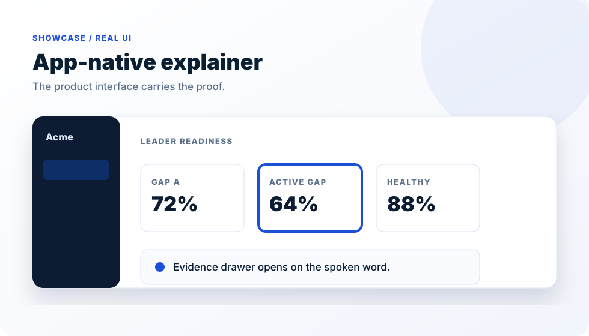
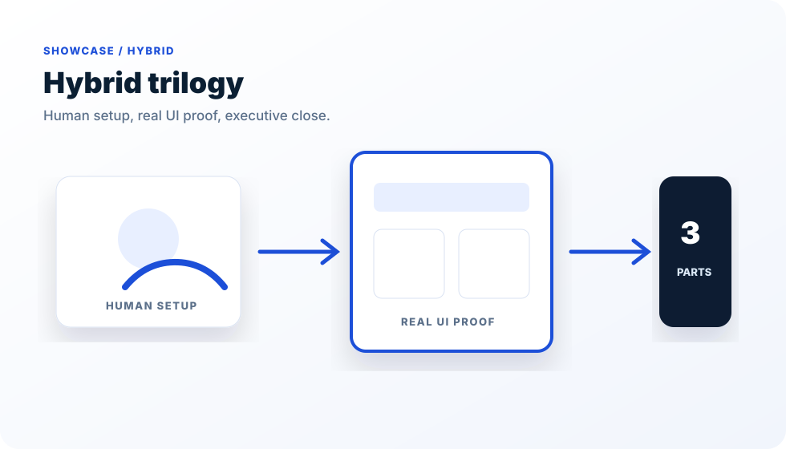
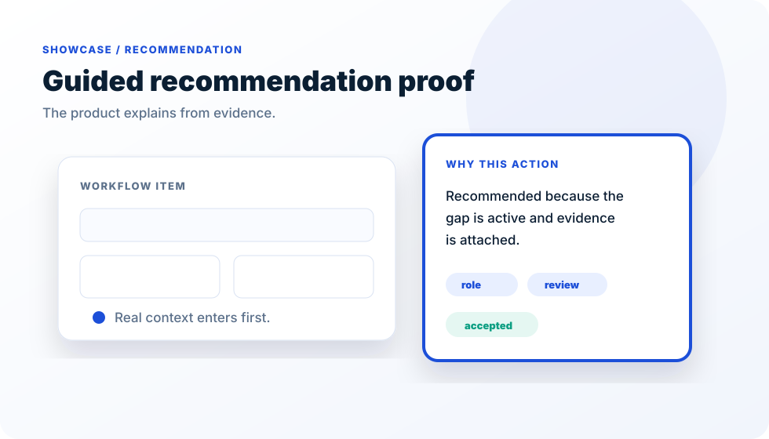

Voiceover first
The narration sets the timeline. Every sentence gets one visual actor.
Open-source product-film studio
Turn a real interface into a polished, deterministic film where every claim is proved on screen.
npx create-vision-reel@latest my-filmThe narration sets the timeline. Every sentence gets one visual actor.
The app becomes the film set, driven by deterministic time.
Browser frames, FFmpeg stitching, artifact-based QC, and IP safety checks.
Signature presets
Choose a starting format. Every preset uses the same reproducible browser-to-frames render contract.
A beat-synced 2.5D journey with connected proof actions, impact transitions, and an original locally generated score.
--type scroll-story
A fast hook, bold kinetic type, original interface proof, and an ending built to be remembered.
--type launch-film
Turn a concrete creator, product, or concept problem into connected paper actors, timed evidence, a visible payoff, and embedded local music.
--type vox-collage
The deterministic story contract pushed through approved collage plates, connected Seedance motion, upbeat ElevenLabs narration, and a fast three-part score.
optional / source-provenanced
Classic preset
This sample is rendered end-to-end from the included fictional interface, deterministic timeline, browser capture, and FFmpeg pipeline.
Adapt one of the public-safe patterns below, then submit your result to the community showcase.


